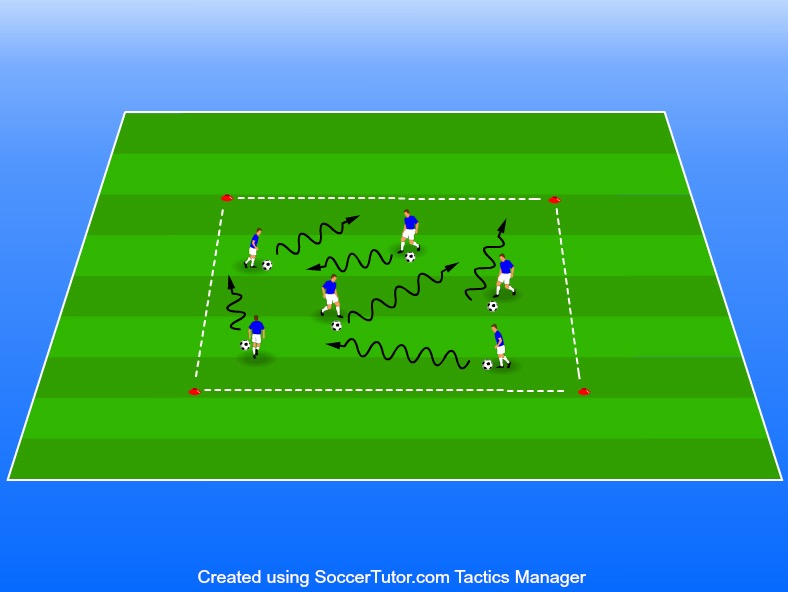

Driva, finta och dribbla, vända och få upp blicken.
Ålder 7–9 år
Antal koner 4 st
Yta varierar beroende på antal
Alla spelare med boll. fintar och dribblar samt vänder fritt
Försök att få upp blicken så mycket som möjligt.
Använd båda fötterna och driv så ofta som möjligt med vristen/utsidan av foten.
Se till att bollen aldrig befinner sig under kroppen.
Kvalitet i vändningar, finter och dribblingar uppnår vi genom att till en början göra det långsamt. Viktigt att alltid ha kontroll på bollen alltså får det inte gå för fort.
Denna övning sätter krav på ledarna då ni styr vilket moment s om ska utföras. Spelarna utför det moment som tränaren anger.
På tränarens kommando skall nämligen alla utföra ett bestämt moment, t ex en vändning.
Tränaren bestämmer ex att när 1 ropas ut ska alla spelare göra t ex en insidesvändning, 2 kan innebära en överstegsfint och på 3 ska alla sätta sig på bollen. Kan varieras oändligt mycket. Det behöver inte heller vara siffror, kan lika gärna vara ett fotbollslag eller kända spelare.